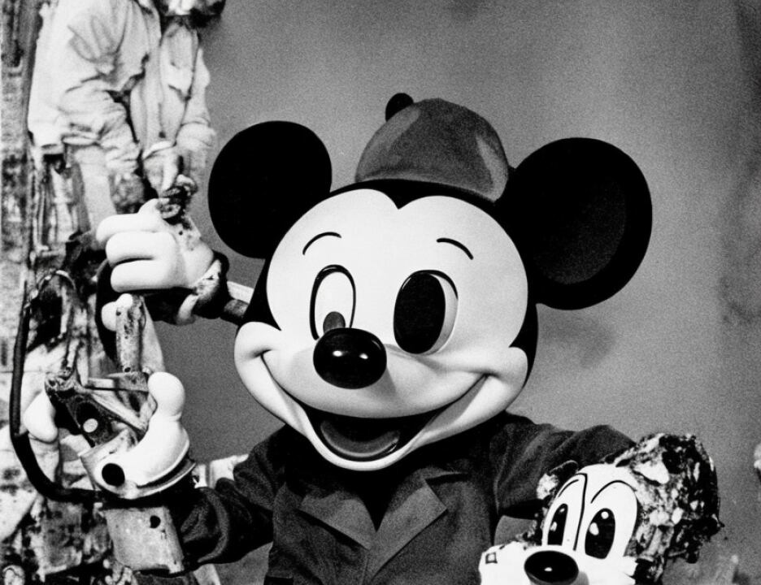

17 Q. Your analysis is not complete on those?
18 A. That's correct.
19 Q. Did you develop fingerprints of comparison value -- maybe
20 I should stop there.
21 Would you tell the jury what you mean, and I think I
22 understand what you mean, but would you tell the jury what is
23 meant by fingerprints of comparison value.
24 A. Of all I believe that there is sufficient area in that
25 sufficient ridge detail in a latent print that I can determine
7972
1 whether an individual had left that latent print or not.
2 That's what we mean when we say "of value," that there is
3 sufficient ridge detail there for a conclusive comparison.
4 Q. Is it your testimony that you identified fingerprints of
5 comparative value that were not the fingerprints of Khalfan
6 Mohamed and not the fingerprints of Mamdouh Mahmud Salim?
7 A. Not that I developed, no.
8 Q. Did you identify fingerprints of comparative value?
9 I don't want to quibble over terminology.
10 A. I'm not quite sure I understand your question.
11 Q. Okay. We'll start from the beginning.
12 A. Okay.
13 Q. You analyzed a great deal of material that was told to you
14 had been seized in connection with this investigation, for
15 example, were you not?
16 A. Yes, sir.
17 Q. And you analyzed handcuffs, radios, documents, keys, a
18 whole gamut of materials, correct?
19 A. That's correct.
20 Q. How many fingerprints did your examination reveal of
21 comparative value?
22 A. I believe I have already stated that there were 12
23 fingerprints, 2 palm prints, 4 toe prints, 1 footprint and 2
24 footprints or palm prints, and I couldn't tell exactly what
25 they were.
7973
1 Q. None of the items had the fingerprints on them of Khalfan
2 Mohamed, correct?
3 A. That's correct.
4 Q. Some of the items had the fingerprints that you could
5 identify of Mamdouh Mahmed Salim, correct?
6 A. That's correct.
7 Q. Were there then prints that were not Mr. Salim's and not
8 Mr. Mohamed's that were nonetheless of comparative value?
9 A. Yes.
10 Q. And how many of them were there?
11 A. Just right off the top of my head, I have identified five
12 fingerprints, so that would be seven fingerprints that are
13 left remain unidentified.
14 Q. There are seven fingerprints, then, that are neither
15 Mr. Mohamed's or Mr. Salim's, but would be of identification
16 value, correct?
17 A. Yes. In addition to that, there's one palm print that
18 doesn't, that wasn't made by Mr. Salim or Mr. Mohamed.
19 Q. Have you looked at the fingerprints, for example, of a man
20 named Mohamed Sadeek Odeh?
21 A. There was a number of people that were compared initially,
22 and if I could just refer back to my notes.
23 The name again, sir?
24 Q. Mohamed Sadeek Odeh, O-D-E-H?
25 A. Yes.
7974
1 Q. And how about Mohamed Rashid Daoud Al-'Owhali?
2 Agent, may I make this suggestion. Not agent. May I
3 make this suggestion? Would you just simply read to the jury
4 the names of the individuals whose fingerprints you
5 identified -- examined and compared.
6 A. Okay. This particular report states that there were six
7 latent fingerprints and one latent palm print developed on a
8 torn piece of paper, but the paragraph I think you are
9 concerned about is in this report I have identified five
10 latent fingerprints and one latent palm print as Salim.
11 The next paragraph reads: "The remaining latent
12 fingerprints, which would be one, are not the fingerprints of
2